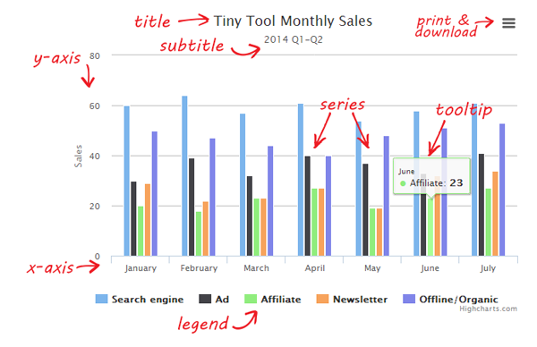

简介 Highcharts是一款纯javascript编写的图表库，能够简单便捷的在Web网站或Web应用中添加交互性的图表，Highcharts目前支持直线图、曲线图、面积图、柱状图、饼图、散点图等多达18种不同类型的图表，可以满足你对Web图表的任何需求 ！ 优势: 兼容性：支持目前所有的现代浏览器，包括IE6 +、iPhone/iPad、Android 开源免费：针对个人用户及非商业用途免费，并提供源代码下载，你可以任意的修改它 纯Javascript：Highcharts完全基于本地浏览器技术，不需要任何插件 图表类型丰富：支持直线图、面积图、柱状图、饼图、散点图、瀑布图、雷达图，共18种类型图表 动态性：在创建图表后对图表的任意点、线和文字等进行增加、删除和修改操作。支持Ajax接口 图表导出和打印功能：可导出为PNG、JPG、PDF和SVG格式文件或直接在网页上打印出来。 多轴支持：可以针对每个轴设置其位置、文字和样式等属性 动态提示框：当鼠标悬停在图表上的数据点时，会显示信息提示框，其内容和样式可以自定义。 图表缩放：可以设置图表的缩放 支持外部数据加载：支持多种数据形式，可以是Javascript数组、json文件、json对象和表格数据等，这些数据来源可以是本地、不同页面，甚至是不同网站 获取highcharts 官方下载： http://www.highcharts.com/download Github 开源项目： https://github.com/highslide-software/highcharts.com 中文API http://www.hcharts.cn/index.php

1 title，表示图片的标题- subtitle是副标题，显示在标题的下边 2 series，表示图表中横线 3 横坐标 xAxis 4 纵坐标 yAxis 5 legend 图例，与页面中的线条一一对应的 6 提示框：tooltip 7 credits，表示版权信息
| 英文名 | 中文名 | 描述 | 更多 |
|---|---|---|---|
| lang | 语言文字对象 | 所有Highcharts文字相关的设置 | 查看教程 |
| chart | 图表 | 图表区、图形区和通用图表配置选项 | 查看教程 |
| colors | 颜色 | 图表数据列颜色配置，是一个颜色数组 | 查看教程 |
| credits | 版权信息 | Highcharts在图表的右下方放置的版权信息及链 | 查看教程 |
| drilldown | 向下钻取 | 向下钻取数据，深入到其中的具体数据 | 查看教程 |
| exporting | 导出模块 | 导出功能配置，导出即将图表下载为图片或打印图表 | 查看教程 |
| labels | 标签 | 可以放置到图表区域内任何位置的HTML标签 | 查看教程 |
| legend | 图例 | 用不同形状、颜色、文字等 标示不同数据列，通过点击标示可以显示或隐藏该数据列 | 查看教程 |
| loading | 加载中 | 加载选项控制覆盖绘图区的加载屏的外观和文字 | 查看教程 |
| navigation | 导航 | 导出模块按钮和菜单配置选项组 | 查看教程 |
| noData | 没有数据 | 没有数据时显示的内容 | 查看教程 |
| pane | 分块 | 针对仪表图和雷达图专用的配置，主要设置弧度及背景色 | 查看教程 |
| plotOptions | 数据点配置 | 针对不同类型图表的配置。Highcharts所有图表类型请看下表 | 查看教程 |
| series | 数据列 | 图表上一个或多个数据系列，比如图表中的一条曲线，一个柱形 | 查看教程 |
| title | 标题 | 包括即标题和副标题，其中副标题为非必须的 | 查看教程 |
| tooltip | 数据点提示框 | 当鼠标滑过某点时，以框的形式提示改点的数据，比如该点的值，数据单位等 | 查看教程 |
| Axis | 坐标轴 | 包括x轴和y轴。多个不同的数据列可共用同一个X轴或Y轴，当然，还可以有两个X轴或Y轴，分别显示在图表的上下或左右。 | 查看教程 |
| 英文名 | 中文名 | 更多 |
|---|---|---|
| line | 直线图 | 查看教程 |
| spline | 曲线图 | 查看教程 |
| area | 面积图 | 查看教程 |
| areaspline | 曲线面积图 | 查看教程 |
| arearange | 面积范围图 | 查看教程 |
| areasplinerange | 曲线面积范围图 | 查看教程 |
| column | 柱状图 | 查看教程 |
| columnrange | 柱状范围图 | 查看教程 |
| bar | 条形图 | 查看教程 |
| pie | 饼图 | 查看教程 |
| scatter | 散点图 | 查看教程 |
| boxplot | 箱线图 | 查看教程 |
| bubble | 气泡图 | 查看教程 |
| errorbar | 误差线图 | 查看教程 |
| funnel | 漏斗图 | 查看教程 |
| gauge | 仪表图 | 查看教程 |
| waterfall | 瀑布图 | 查看教程 |
| polar | 雷达图 | 查看教程 |
| pyramid | 金字塔 | 查看教程 |
highcharts 依赖jquery库, 所以要先引jquery库,再引highcharts文件
highcharts有exporting.src.js 插件,用来输出图标
Series，表示图表数据列，图表中可以有多个数据列，所以该属性是个数组。它的每个成员是个对象，表示每个数据列，这个对象有两个属性 Name： 数据列的名称 Data：数据列的数据值 图表的纵坐标的值，在不设置的情况下，会根据我们数据列中的最大值自动生成的 为数据列添加name属性，会自动添加到，图例上和提示条上 数据列data成员设置比较自由， 可以是一个数字表示y值，此时x值就是数据项对应的索引值 可以是一个数组，数组中第一项表示x值，第二项表示y值 可以是一个对象，对象中x属性表示x值，y属性表示y值，还可以添加其他属性，比如color表示该点的颜色
Tooltip 可以通过style设置样式 想设置内容有两种方法， 一种调用方法，比如 formatter： 表示渲染整个提示框内部的内容， pointFormatter：表示渲染该点的信息内容 一种调用模板， 比如 headerFormat：渲染提示框的标题 pointFormat：渲染该点的信息内容